RoFormer: Enhanced Transformer with Rotary Position Embedding
论文地址：https://arxiv.org/abs/2104.09864
代码地址：https://github.com/ZhuiyiTechnology/roformer
总结：提出了一种基于旋转角度的相对位置编码方案:RoPE，将d维的embeddiing拆分成d/2个2维向量来看待，之后对不同的二维向量施加频率不同且和位置相关的旋转角度，从而将位置信息编码到embedding中，其好处在于进行编码后的embedding内积得到的attention score就包含了相对位置信息、无需学习额外的embeddiing参数且可适用于linear self-attention。
编码后的embedding内积的相对上界随相对距离的变化如下图：基本满足远程衰减的趋势
实验结果：
在翻译任务上训练得到的指标略优 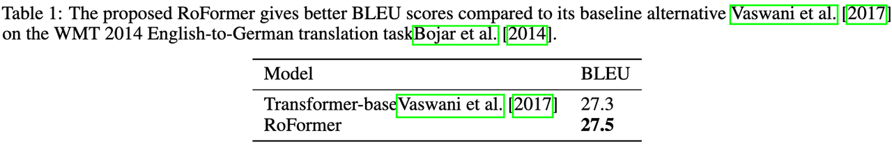
收敛速度更快，且在使用linear self-attention机制的Performer上也有一致的提升 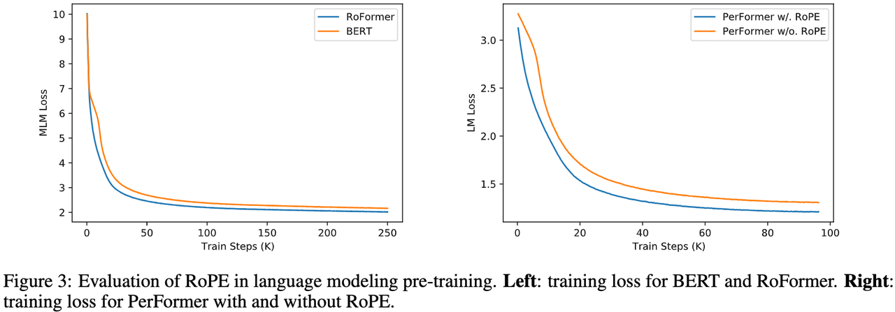
在下游任务上finetune之后，在一些任务上效果显著优于BERT 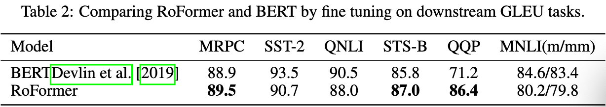
预训练好后，可以增加输入长度，在中文数据集上测试，有显著的提升 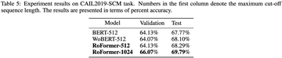
Extending Context Window of Large Language Models via Positional Interpolation
论文地址：https://arxiv.org/abs/2306.15595
代码地址：暂无
总结：提出使用内插RoPE的方式来代替外推RoPE以扩展语言模型的输入长度，并通过理论和实验证明该方式相比于外推在finetune时有更快的收敛性和更好的效果，外推方式训练10000 step之后的效果还不如内插方式训练1000 step。 论文提出：足够多（维度足够大）三角函数的组合可以逼近任意函数，因此总是存在合适的系数导致外推RoPE之后的attention score变得很大（论文中证明：相比于外推之后的score上限，内插之后的score上限大概是1/600），这是导致外推难以训练的潜在原因。
内插方法很简单，就是对位置id进行内插 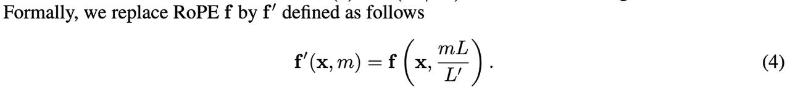
内插和外推的对比如下，直接外推之后，在没有训练过的长度上会导致attention score异常（中间图） 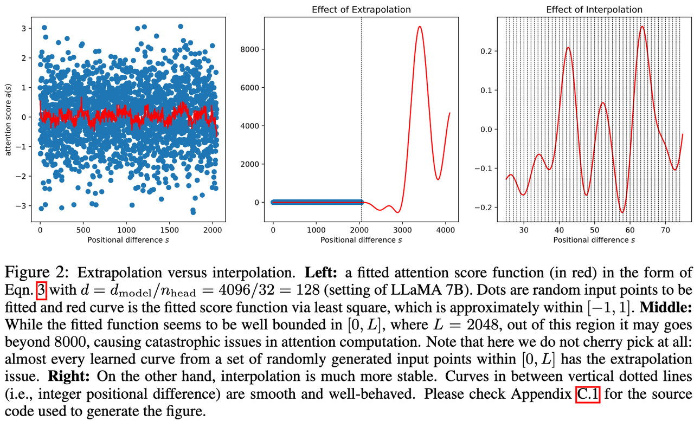
在PG19和Arxiv Math Proof-pile数据集上，内插+finetune的方式均能看到困惑度指标的下降，并且大致是随着window size增加而变好 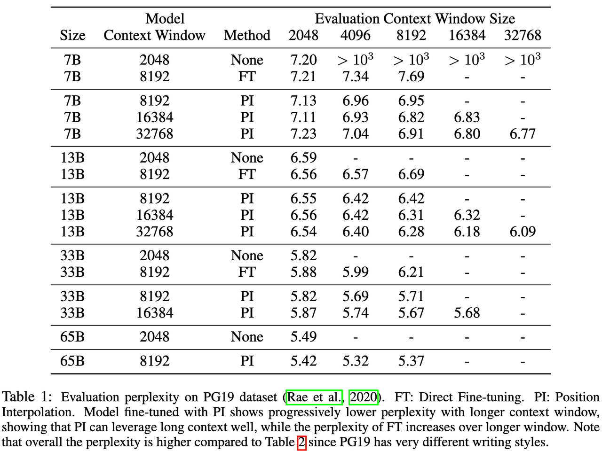
内插方式的finetune时的收敛速度很快： 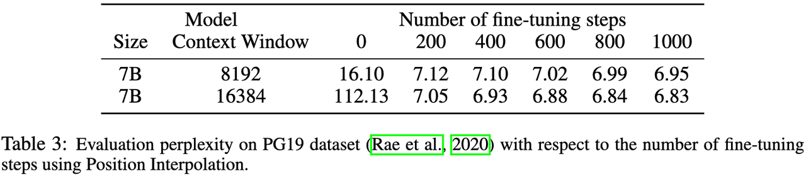
内插+finetune和外推+finetune的收敛速度对比： 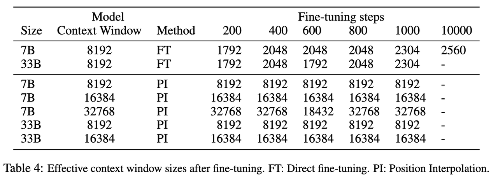
内插方式增加window size微调之后，相比于原始模型，在一些任务上指标有轻微下降，但在在需要仔细判别短句单词顺序的场景下降很明显，例如BoolQ数据集 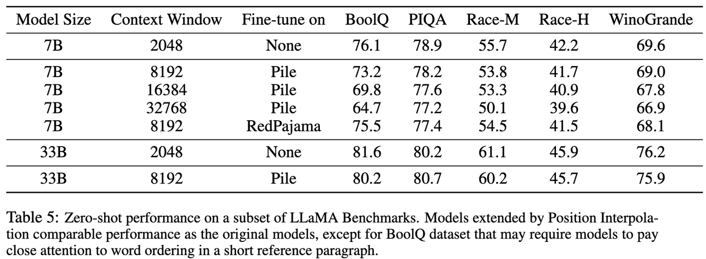
在长文档总结的任务上，finetune 10个epoch就能做到和其他模型相当的得分，说明内插确实能够有效扩展window size 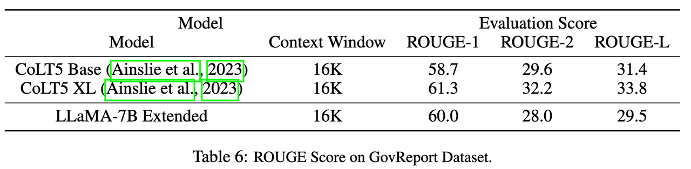
NTK-Aware Scaled RoPE allows LLaMA models to have extended (8k+) context size without any fine-tuning and minimal perplexity degradation
这不是论文，而是reddit上的一篇文章，针对上面的内插RoPE+finetune的方法，提出了无需finetune的NTK-Aware Scaled RoPE方法
引入NTK理论只是说明神经网络模型无法很好的学习高频特征，而线性内插的方式对特征进行了较多的下采样，导致模型无法很好的区分位置很近的token，因此作者提出了非线性的内插方法，不再对位置id进行线性内插，而是对其傅里叶特征进行高频外推、低频内插的非线性方式，最终代码修改很少，无需finetune，但效果非常好，RoPE的作者在博客中有相关解读：https://kexue.fm/archives/9675，在该博客中还提到，在attention中更换缩放因子能够缓解窗口大小增大后的注意力不集中问题： \[\frac{1}{\sqrt{d}} \rightarrow \frac{\log_{512}^{n}}{\sqrt{d}} \](训练时使用的是512的窗口大小，预测窗口大小为n，该参数是从熵不变的角度推理得到的)，从而在没有finetune的NTK-Aware Scaled RoPE上带类更好的性能，如下右上图所示，带log n项的实验普遍有更好的效果
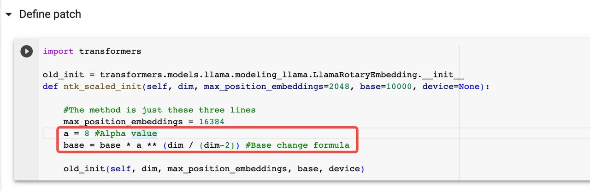 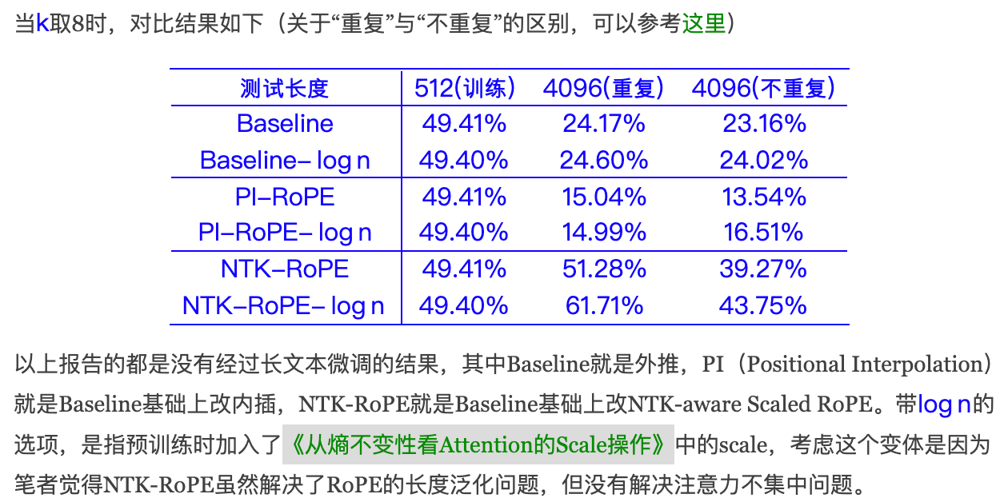 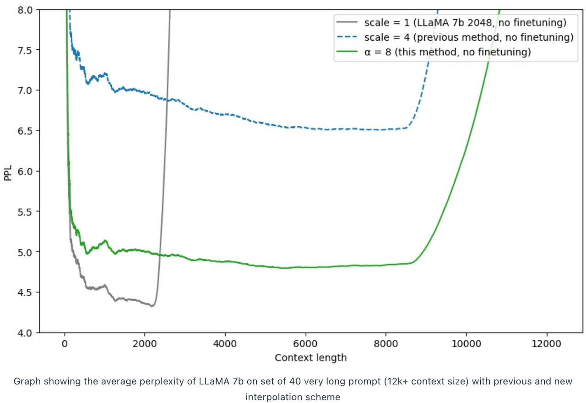 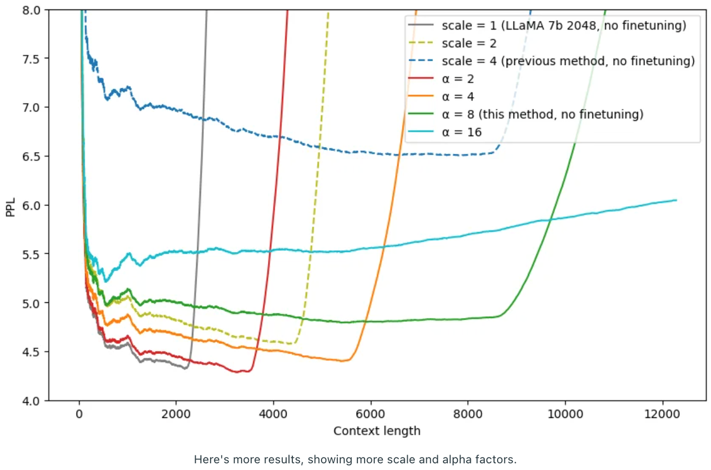
LongLoRA: Efficient Fine-tuning of Long-Context Large Language Models
论文地址：https://arxiv.org/abs/2309.12307
代码地址：https://github.com/dvlab-research/longlora
总结：提出通过shift short attention + 带有可训练embedding layer和norm layer的LoRA微调方式(LoRA+)来对语言模型的输入序列长度进行扩展，8张A100上可以实现LLaMA2-7B模型100k Context Length的训练。另外，论文中构建了一个长上下文的QA数据集：LongQA，用于支持有监督的finetune，主要是为了提升LLM在长上下文下的对话能力。 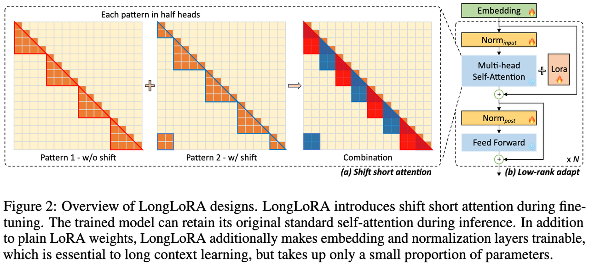
相比于Train-free的基于编码的长度外推，该论文方案可以在其基础上进一步提升效果： 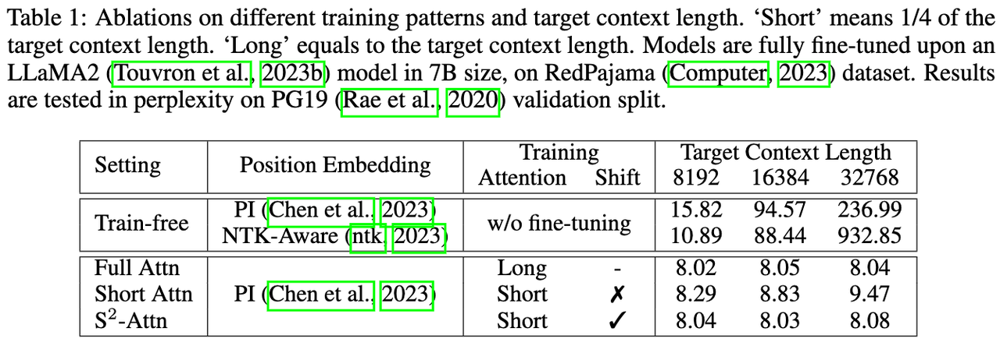
实验证明单独使用LoRA效果不佳，而带上Norm和embedding层参数可学习之后有明显提升： 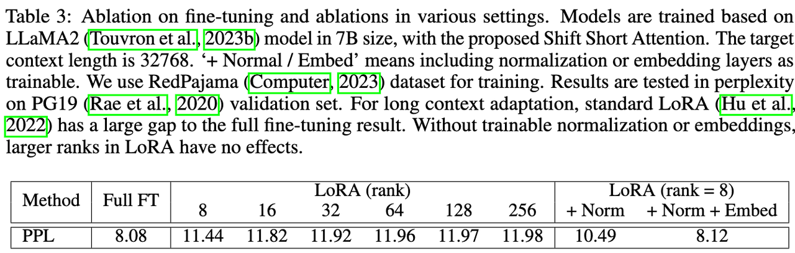
Shift short attention相比于其他高效attention结构（dilate attention、stride sparse attention）有明显优势，且即使在训练过程中使用short attention，在预测过程中照样可以使用full attention，另外，实验证明shift在head之间实现最佳，在layer之间实现效果略差。 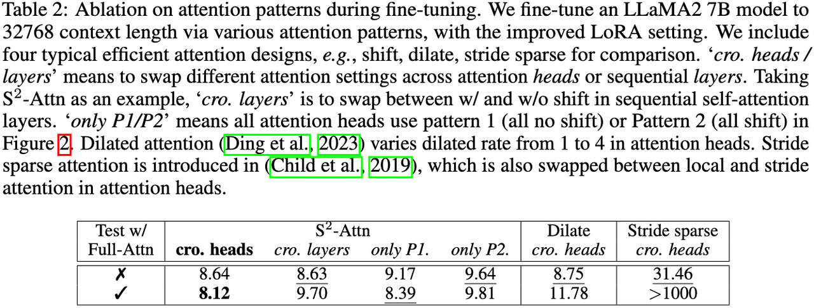
全参数finetune和LoRA+的效果对比，区别很小： 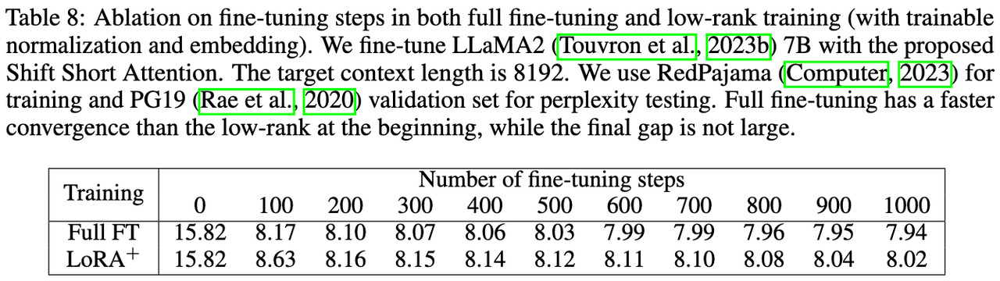
shift short attention对FlOPs的减少较大： 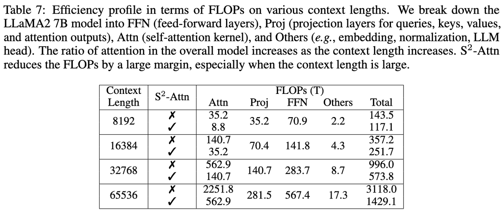
消融实验以及不同训练和推理长度的对比： 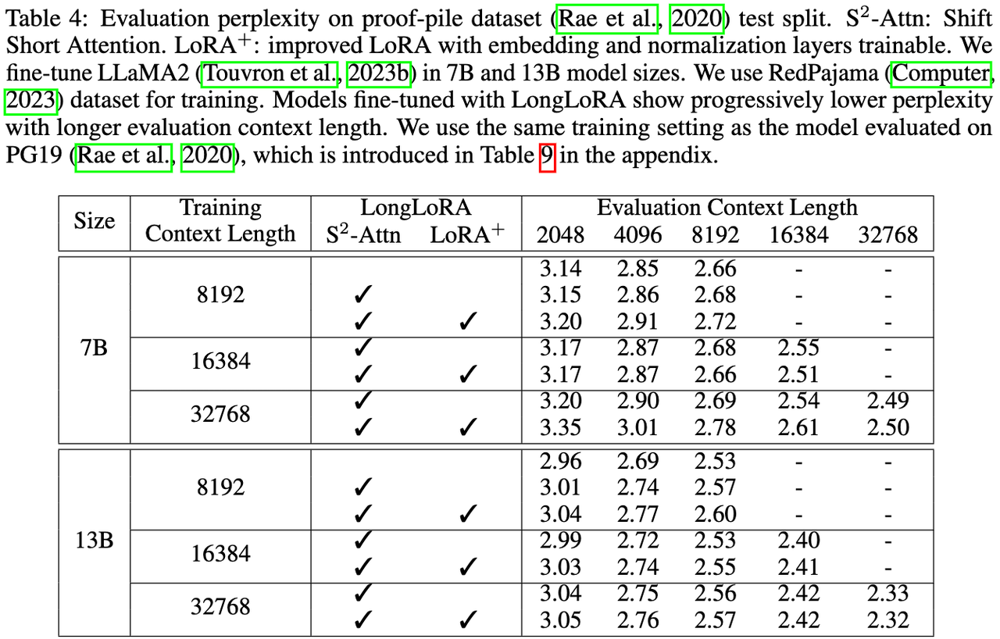